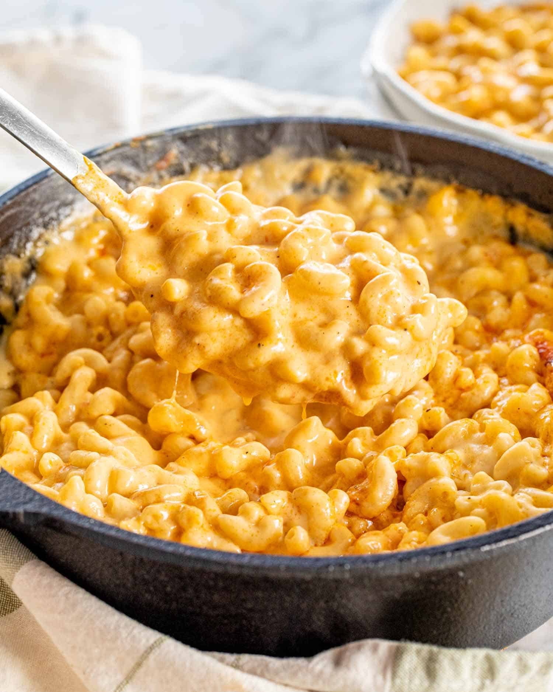

Mac & Cheese

Description
A simple recipe for Mac & Cheese, that's easiy customizable.
Ingredients
- Macaroni, 100g
- Cheddar, 50g
- Mozzarella, 50g
- Milk, 1 cup
- Butter, 1 tbsp
- Flour, 1 tbsp
- Garlic Powder, 1/4 tsp
- Salt & Pepper, to taste
Steps
- Cook macaroni in salted water, reserve about 1/8 cup
of water when finished.
- Melt the butter. Stir in flour to form a paste.
Gradually whisk in the milk, ensuring no lumps.
- Once sauce has thickened, add in garlic powder, salt,
and pepper.
- Mix in the cheese, until fully melted.
- Add the macaroni with the reserved water.